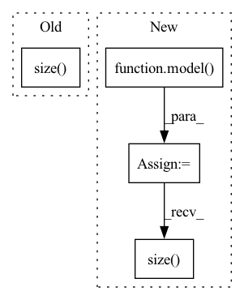

Pattern ID :6178

Before Change
y = model(frame_list)
print("Network output size: ", y.size())
y = model.forward_no_head(frame_list_copy)
print("Network output size without pooling:", y.size())
print()
frame_list_copy = rand_input(cfg, 3,128,224,224)
After Change
//print("Network output size without pooling:", y_long.size(), "\n")
frame_list = rand_input(cfg, 3,32,224,224)
y2 = model(frame_list)
cos_sim = torch.nn.CosineSimilarity(dim=1)
sim_y1_y2 = cos_sim(y1, y2)
print("Similarity output size:", sim_y1_y2.size())
if __name__ == "__main__":
In pattern: SUPERPATTERN
Frequency: 3
Non-data size: 4
Instances
Fragment ID: 21166406
Project Name: rvl-lab-utoronto/video_similarity_search
Commit Name: 04e516097e8448277fdcd0f4e4d6bfcd295515c4
Time: 2020-08-11
Author: salar77h@gmail.com
File Name: models/slowfast/test.py
M Class Name: AnonimousClass
N Class Name: AnonimousClass
M Method Name: test(0)
N Method Name: test(0)
M Parent Class:
N Parent Class:
M File Name: models/slowfast/test.py
N File Name: models/slowfast/test.py
M Start Line: 28
M End Line: 48
N Start Line: 28
N End Line: 55
'>
Before Change
//rgb_center_img_tensor = input_center[0:3]
//mask = (input_center[3] + input_first[3] + input_last[3]) / 2
print ("Input size", input.size())
center_img = vid_tensor_to_numpy(rgb_center_img_tensor*mask)[0]
center_img = cv2.cvtColor(center_img, cv2.COLOR_RGB2BGR)
After Change
if cuda:
center_img_salient = center_img_salient.to(device)
embedd = model(center_img_salient)
embeddings.append(embedd.detach().cpu())
vid_paths.extend(vid_path)
if (i == 0):
print("Embedd size", embedd.size())
if i % log_interval == 0:
print("Encoded [{}/{}]".format(i, len(data)))
'>
Fragment ID: 21166407
Project Name: rvl-lab-utoronto/video_similarity_search
Commit Name: e5eeb446b18f40a7af123ef6d93ea24c32cc0538
Time: 2020-08-28
Author: salar77h@gmail.com
File Name: clustering/cluster_masks.py
M Class Name: AnonimousClass
N Class Name: AnonimousClass
M Method Name: get_embeddings_mask_regions(3)
N Method Name: get_embeddings_mask_regions(3)
M Parent Class:
N Parent Class:
M File Name: clustering/cluster_masks.py
N File Name: clustering/cluster_masks.py
M Start Line: 46
M End Line: 109
N Start Line: 51
N End Line: 127
'>
Before Change
y_hats = torch.max(logits, dim=-1)[1]
//print(label_to_string(target, id2char))
loss = criterion(logits.view(-1, logits.size(-1)), target.view(-1))
total_loss += loss.item()
num_samples += batch_size
After Change
n_samples += inputs.size(0)
preds = model(inputs. input_length, targets)
loss = criterion(preds.view(-1, preds.size(-1)), targets[:,1:].view(-1))
loss.backward()
nn.utils.clip_grad_norm_(model.parameters(), max_norm=max_norm)
optimizer.step()
'>
Fragment ID: 21166405
Project Name: qute012/kosr
Commit Name: fad0d9ba92dcbd3024650057784c0a484dc1f8e7
Time: 2021-01-28
Author: ejrwls012@gmail.com
File Name: kosr/trainer/trainer.py
M Class Name: AnonimousClass
N Class Name: AnonimousClass
M Method Name: train(6)
N Method Name: train(6)
M Parent Class:
N Parent Class:
M File Name: kosr/trainer/trainer.py
N File Name: kosr/trainer/trainer.py
M Start Line: 26
M End Line: 35
N Start Line: 26
N End Line: 35